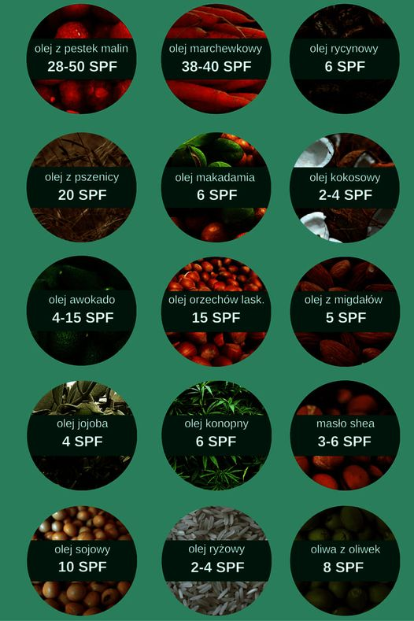

W poprzednim poście pisałam o niebezpiecznych składnikach kosmetyków do opalania z filtrem UV 🌅☀️🌅
Obiecałam również że napiszę Wam co można stosować w zamian jako zdrową alternatywę 🍀🍀🍀
Bezpieczną i zdrową alternatywą będą naturalne oleje dobrej jakości najlepiej BIO tj.:
➡️ olej kokosowy (2-4 SPF) – łagodzi podrażnienia, działa antybakteryjnie i nawilża skórę,
➡️ olej z orzechów laskowych (3-4 SPF) – wzmacnia naczynia krwionośne oraz przyspiesza regenerację naskórka,
➡️ olej sezamowy (4 SPF) – poprawia krążenie, oczyszcza skórę z toksyn oraz ma działanie przeciwstarzeniowe,
➡️ olej z awokado (4 SPF) – odżywia i nawilża skórę, jest bogaty w witaminy oraz uzupełnia barierę lipidową skóry,
➡️ masło shea (3-6 SPF) – przyspiesza leczenie ran i oparzeń oraz nawilża skórę,
➡️ olej ze słodkich migdałów (5 SPF) – wygładza i zmiękcza skórę,
➡️ olej z orzechów macadamia (6 SPF) – zmiękcza, nawilża i wygładza skórę oraz usuwa podrażnienia przy opalaniu,
➡️ oliwa z oliwek (8 SPF) – ujędrnia i nawilża skórę, działa przeciwzapalnie, antyalergicznie, przeciwutleniająco oraz zapobiega powstawaniu zmarszczek,
➡️ olej sojowy (10 SPF) – chroni skórę przed utratą wody,
➡️ olej z kiełków pszenicy (20 SPF) – opóźnia procesy starzenia, nadaje gładkość oraz chroni skórę przed utratą wilgoci,
➡️ olej z nasion dzikiej marchewki (38-40 SPF) – łagodzi poparzenia słoneczne, nawilża i regeneruje oraz odmładza skórę,
➡️ olej z pestek malin (28-50 SPF) – redukujezmarszczki, zmiękcza i ujędrnia skórę, ma właściwości przeciwzapalne ichroni skórę przed utratą wody.
UWAGA ‼️‼️‼️
Jeżeli mamy jasną skórę, która jest podatna na oparzenia słoneczne 🔥🔥 do tego jest bardzo wrażliwa bezpieczną opcją będą kosmetyki do opalania z filtrem UV ekologiczne, które mają bezpieczne składniki. W tym wypadku oleje, które wyżej opisałam mogą być mało skuteczne.
Pamiętajmy również ✋✋ że takim olejem smarujemy się częściej niż zwykłym chemicznym aby chronił skórę przed ☀️
Życzę Wam mądrego korzystania z kąpieli słonecznych 🤗
